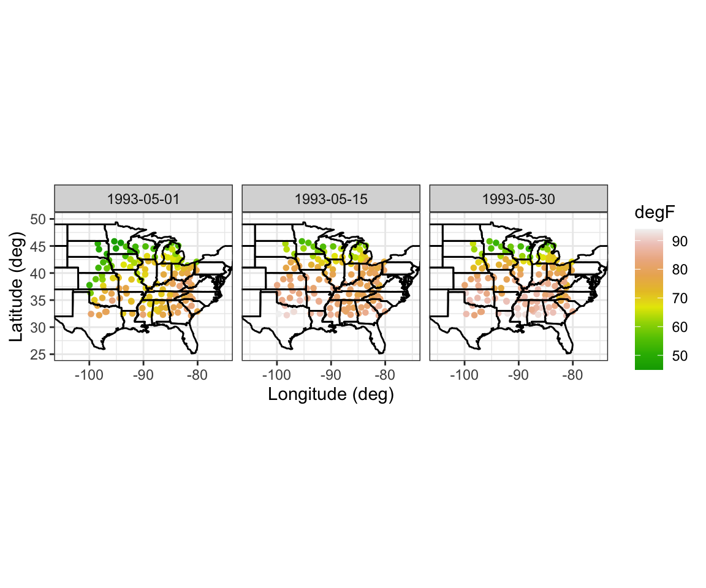
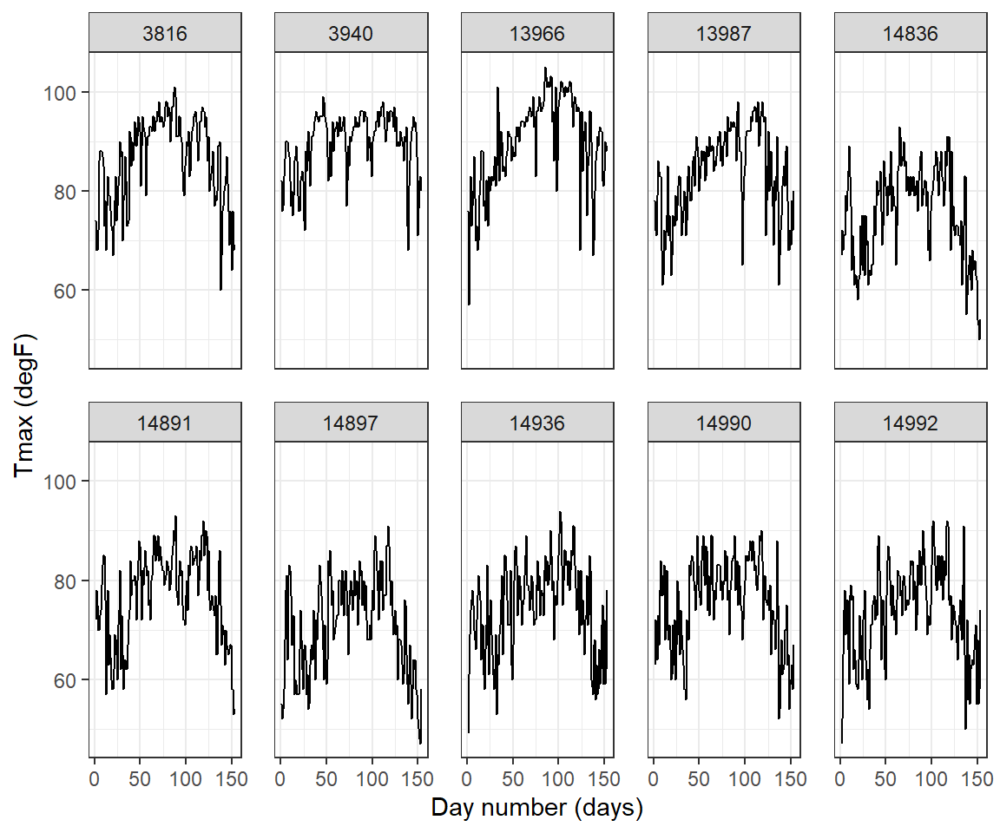

library(dplyr)
library(tidyr)
library(ggplot2)
load("datasets/Tmax.Rdata")
head(Tmax)## julian year month day id z proc lat lon date t
## 1 728050 1993 5 1 3804 82 Tmax 39.35 -81.43333 1993-05-01 1
## 2 728051 1993 5 2 3804 84 Tmax 39.35 -81.43333 1993-05-02 2
## 3 728052 1993 5 3 3804 79 Tmax 39.35 -81.43333 1993-05-03 3
## 4 728053 1993 5 4 3804 72 Tmax 39.35 -81.43333 1993-05-04 4
## 5 728054 1993 5 5 3804 73 Tmax 39.35 -81.43333 1993-05-05 5
## 6 728055 1993 5 6 3804 78 Tmax 39.35 -81.43333 1993-05-06 6Tmax_1 <- subset(Tmax, t %in% c(1, 15, 30)) # extract data
# Spatial Plots
NOAA_plot <- ggplot(Tmax_1) + # plot points
geom_point(aes(x = lon,y = lat, # lon and lat
colour = z), # attribute color
size = 1.2) + # point size
scale_colour_gradientn(name = "degF", # attach color scale
colours = terrain.colors(10)) +
xlab("Longitude (deg)") + # x-axis label
ylab("Latitude (deg)") + # y-axis label
geom_path(data = map_data("state"), # add US states map
aes(x = long, y = lat, group = group)) +
facet_grid(~date) + # facet by time
coord_fixed(xlim = c(-105, -75),
ylim = c(25, 50)) + # zoom in
theme_bw()
NOAA_plot
## -----------------------------------------------------------
UIDs <- unique(Tmax$id) # extract IDs
UIDs_sub <- sample(UIDs, 10) # sample 10 IDs
Tmax_sub <- filter(Tmax, id %in% UIDs_sub) # subset data
## ------------------------------------------------------------------------
TmaxTS <- ggplot(Tmax_sub) +
geom_line(aes(x = t, y = z)) + # line plot of z against t
facet_wrap(~id, ncol = 5) + # facet by station
xlab("Day number (days)") + # x label
ylab("Tmax (degF)") + # y label
theme_bw() + # BW theme
theme(panel.spacing = unit(1, "lines")) # facet spacing
TmaxTS